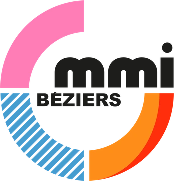
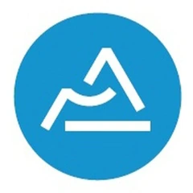
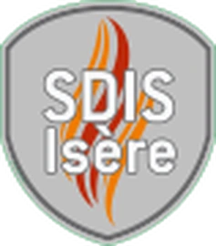
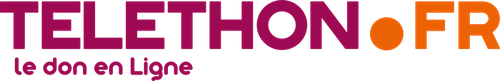

Mon parcours

2025 — 2026BUT MMI, Métiers du multimédia et de l’internet
IUT de Béziers

2022 — 2025Baccalauréat STI2D, option SIN
Lycée polyvalent Galilée, Vienne
- 2019 — 2022
Collège de l’Isle
Vienne
- 2018 — 2019
Collège Louis Aragon
Villefontaine
Intégrer une alternance en développement web, en UI/UX design ou en communication web, pour contribuer à des projets créatifs et innovants tout en continuant à monter en compétences dans le numérique.

2 ansSapeur-pompier volontaire
Caserne de Vernioz. Esprit d’équipe, rigueur, sens des responsabilités.
- 2 mois, été
Gardien d’espace aquatique
Camping Le Bontemps, Vernioz. Surveillance, accueil du public, entretien.
- 1 semaine
Stage de 3e
Service informatique de la ville de Vienne. Installation d’une salle de conférence, réparation de PC.
Prix Jacques Prévert
Décerné par la Société des poètes français.

Téléthon
Maison des lycéens et CVL
Conseil de Vie Lycéenne
Échange Erasmus+
IISS Ruggero II, Italie
Club journalisme et radio